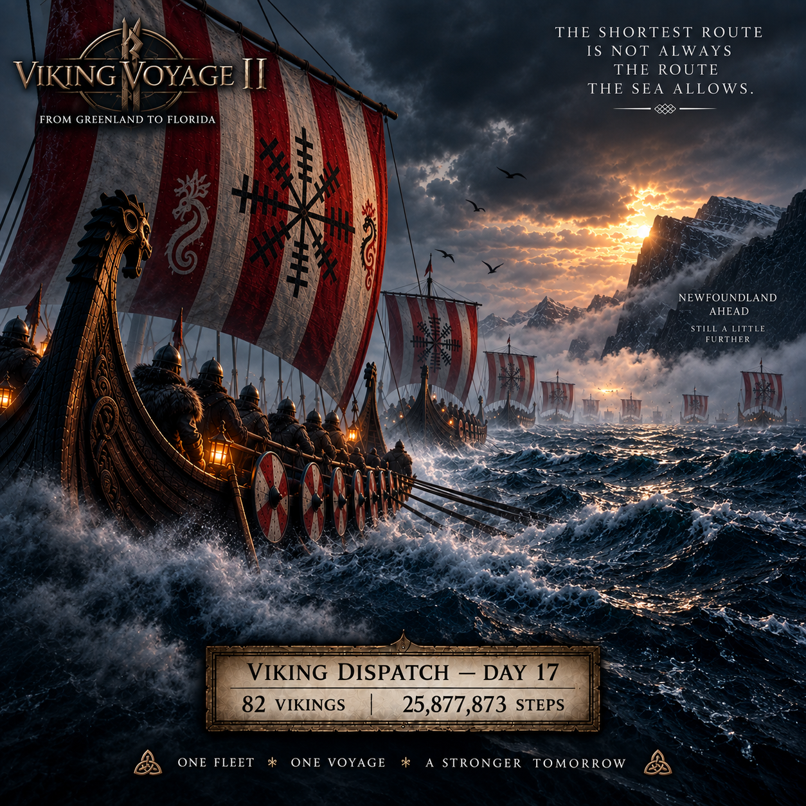
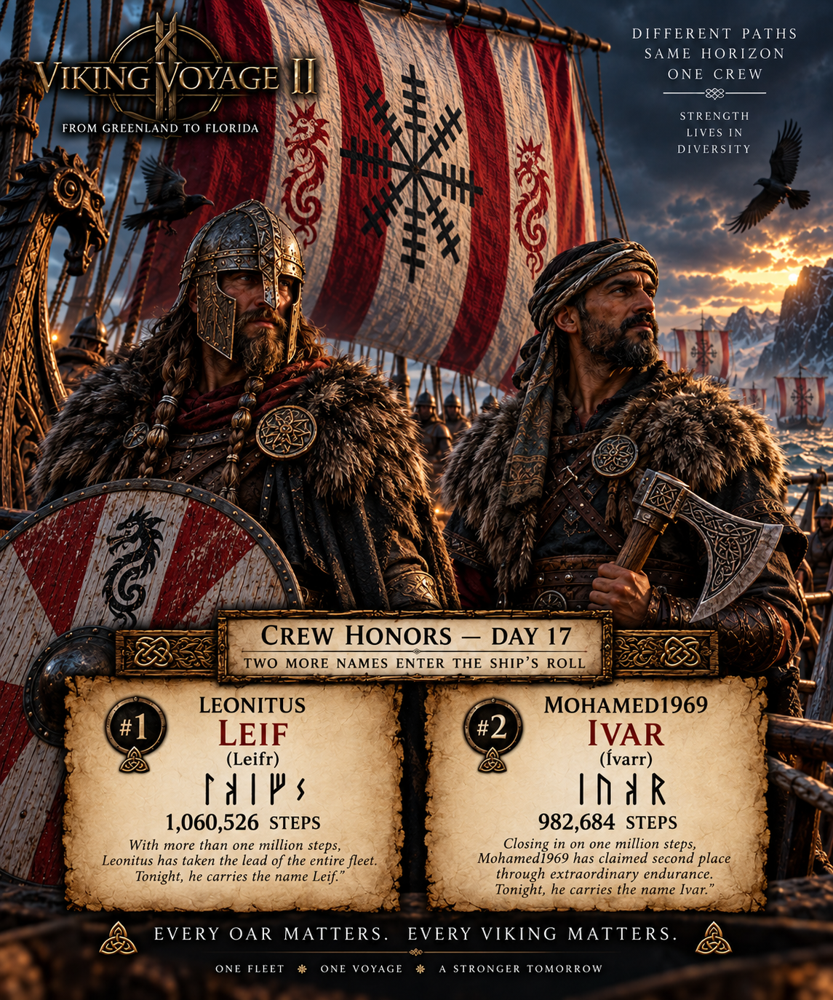
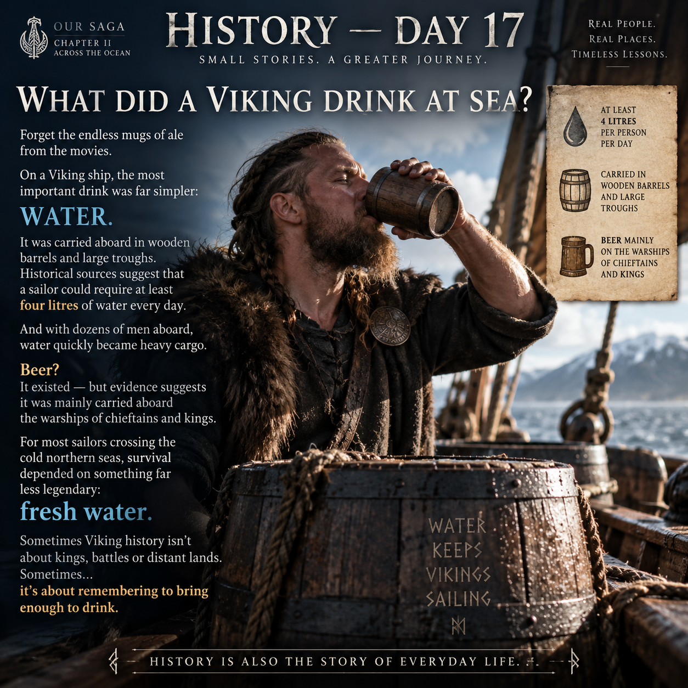
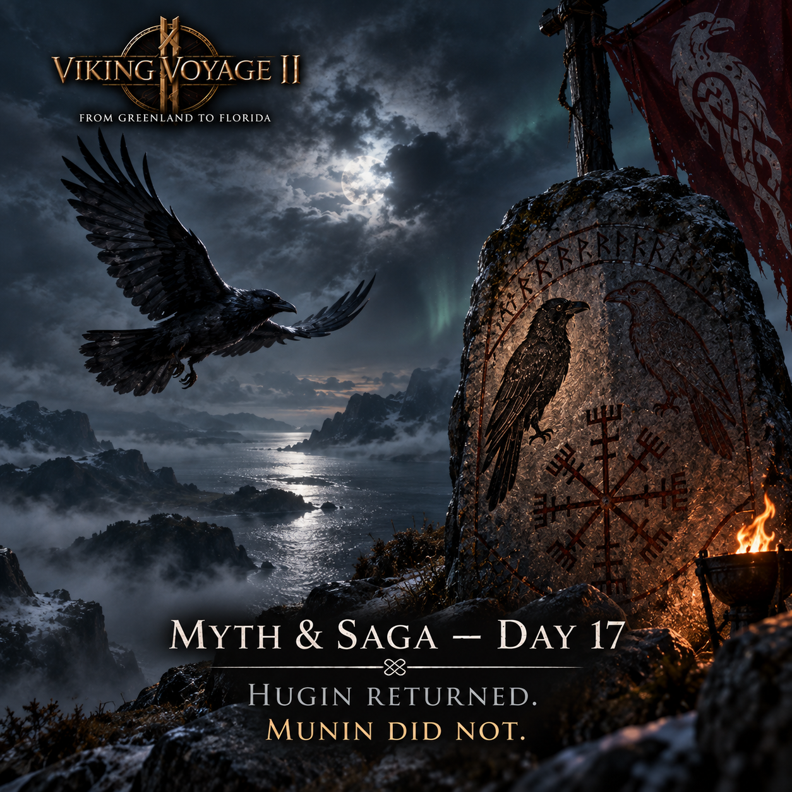
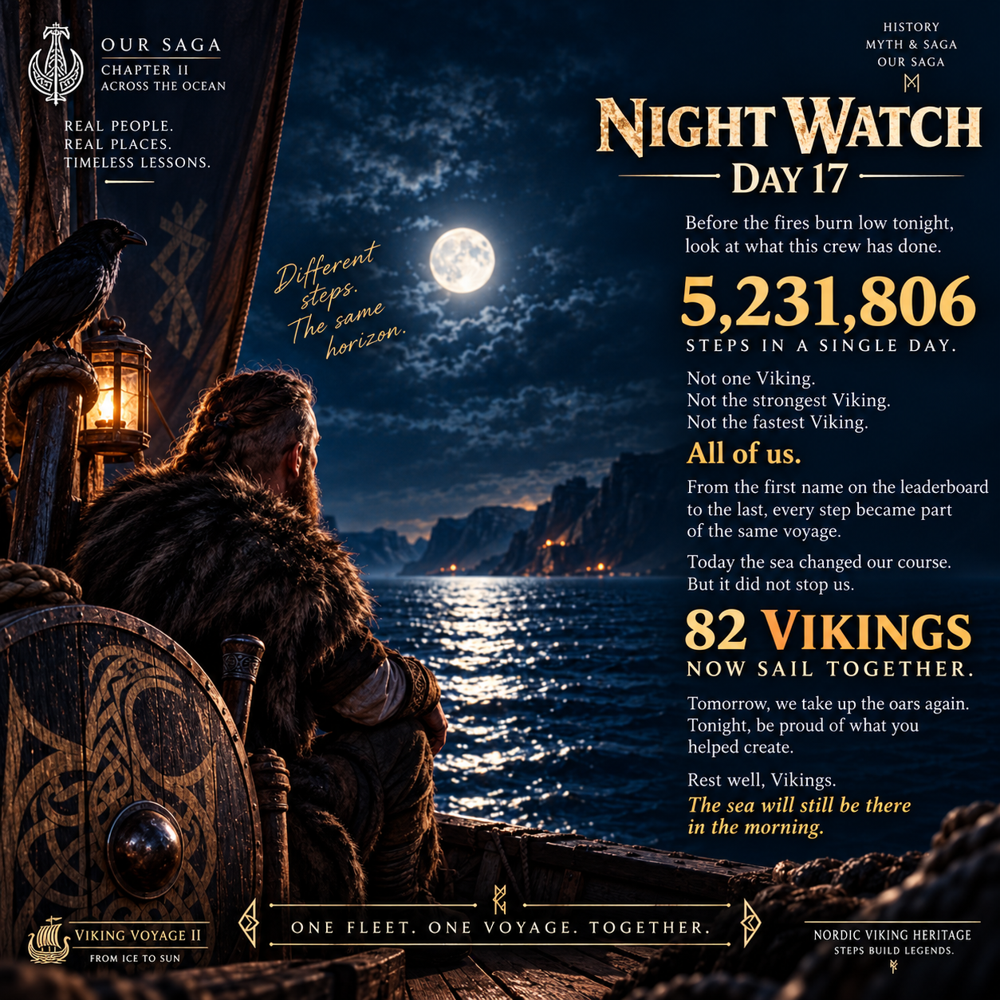

THE SEA CHANGED OUR COURSE
Real activity in Pacer moves the ship. Chapter II continues: after a great sweep across open water, the fleet has turned once more toward Newfoundland.


Thought flies above the fleet. Memory remains somewhere beyond the horizon.
THE SHORTEST ROUTE IS NOT ALWAYS THE ROUTE THE SEA ALLOWS
82 Vikings have carried the fleet to 25,877,873 steps — approximately 16,820.6 km since Greenland.
In a single day the crew added 5,231,806 steps — approximately 3,400.7 km. One of the greatest days our fleet has produced.
In OUR SAGA, wind, current and fog have driven the ships through a great sweep over open water. The helms have now turned again toward Newfoundland.
49,122,127 steps — approximately 31,929.4 km — remain before Florida.
82 VIKINGS. ONE FLEET. ONE VOYAGE.
NEWFOUNDLAND AWAITS.

NORTH AMERICAN MAINLAND → NEWFOUNDLAND
The official Chapter II geography remains fixed. Day 17's extraordinary progress is carried in OUR SAGA as a wide sweep over open water before the fleet turns back toward Newfoundland.
No Day 17 map was published: the voyage record will only show a map when the crew's position can be represented correctly. Newfoundland never moves. Only the way there changes.
THE VOYAGE BECOMES A LIVING SAGA
THE HELMS TURN
The sea carried our ships far from the simple line we expected to sail.
Today alone: 5,231,806 steps — approximately 3,400.7 km.
One of the greatest days our fleet has ever produced.
Tonight, the helms turn. The sails fill. And through the thinning fog, every ship turns once more toward Newfoundland.
The shortest route is not always the route the sea allows.
But the destination remains unchanged.
NEWFOUNDLAND AWAITS.
82 VIKINGS. ONE FLEET. ONE VOYAGE.
OUR SAGA CONTINUES.
NAMES CARRIED ABOARD
Permanent pairings verified in the current working register. Once a name enters the roll, it is never reused.
TWO MORE NAMES ENTER THE SHIP'S ROLL
EVERY OAR MATTERS
Crew Honors belongs to OUR SAGA. It is a Viking Voyage II tradition, not a claimed reconstruction of a documented Viking Age ceremony.
Once entered into THE SHIP'S ROLL, a sailor's name remains part of this voyage.

THE NORTH ATLANTIC CROSSING IS COMPLETE
For fifteen days, we watched the horizon.
We left Greenland behind and pushed westward across the cold North Atlantic — one step, one sailor, one day at a time.
Tonight, there is land beneath our feet.
19,155,478 steps.
≈ 12,451.1 km.
72 Vikings.
And for the first time since this voyage began, we can turn around and see what we have crossed.
CHAPTER I IS COMPLETE.
CHAPTER II AWAITS.
WHAT DID A VIKING DRINK AT SEA?
Forget the endless mugs of ale from the movies. On a Viking ship, the most important drink was far simpler: water.
It was carried aboard in wooden barrels and large troughs. Historical sources suggest that a sailor could require at least four litres of water every day.
Beer existed, but evidence from the Viking Ship Museum suggests it was mainly carried aboard the warships of chieftains and kings.
For most sailors crossing the cold northern seas, survival depended on fresh water.
Vikings also drank milk on land — from cows, goats and sheep — but this entry focuses specifically on provisions aboard ship.
HISTORY IS ALSO THE STORY OF EVERYDAY LIFE.

HUGIN RETURNED. MUNIN DID NOT.
In the old stories, Odin had two ravens: Hugin — Thought, and Munin — Memory.
Each day they flew across the worlds and returned to their master with what they had seen. But the old verses tell us something more: Odin feared for them.
Tonight, above our fleet, only one raven crosses the dark sky.
Hugin has returned.
He has seen the fog. He has seen the sea carry our ships from their course.
But Munin? Still nothing.
No black wings through the mist. No familiar cry above the mast. No message from whatever lies beyond the horizon.
Perhaps Munin is merely far away. Perhaps he has found something. Or perhaps… something has found him.
For now, we sail with Thought beside us — while Memory remains somewhere in the darkness.
MUNIN HAS NOT RETURNED.

ALL OF US
Before the fires burn low tonight, look at what this crew has done.
5,231,806 steps in a single day.
Not one Viking. Not the strongest Viking. Not the fastest Viking. All of us.
From the first name on the leaderboard to the last, every step became part of the same voyage.
Today the sea changed our course. But it did not stop us.
82 Vikings now sail together.
Tomorrow, we take up the oars again. Tonight, be proud of what you helped create.
Rest well, Vikings. The sea will still be there in the morning.
ONE FLEET. ONE VOYAGE. TOGETHER.

CHAPTER II — DAY 17
Chapter I remains frozen in the archive. Day 17 records the fleet's extraordinary open-water sweep and the turn back toward Newfoundland.
POWERED BY OUR CREW
Viking Voyage II is a community step challenge whose voyage is driven by real activity recorded by participants in the Pacer app. Pacer is the platform used by our crew; Nordic Viking Heritage and Viking Voyage II are an independent community project.
THE HISTORY MUST BE TRUE
Historical material is kept separate from OUR SAGA and checked against archaeological and scholarly sources. Day 17's everyday-life entry uses material from the Viking Ship Museum in Roskilde concerning water and provisions aboard Viking ships.
Old Norse forms and Viking Age name evidence used in Crew Honors are checked against runic and scholarly name resources, including Riksantikvarieämbetet's runic database and ISOF's Nordiskt runnamnslexikon.
VIKING SHIP MUSEUM — LIFE ABOARD
ISOF — NORDISKT RUNNAMNSLEXIKON
RIKSANTIKVARIEÄMBETET — RUNOR
“Every step counts.
Every Viking matters.”